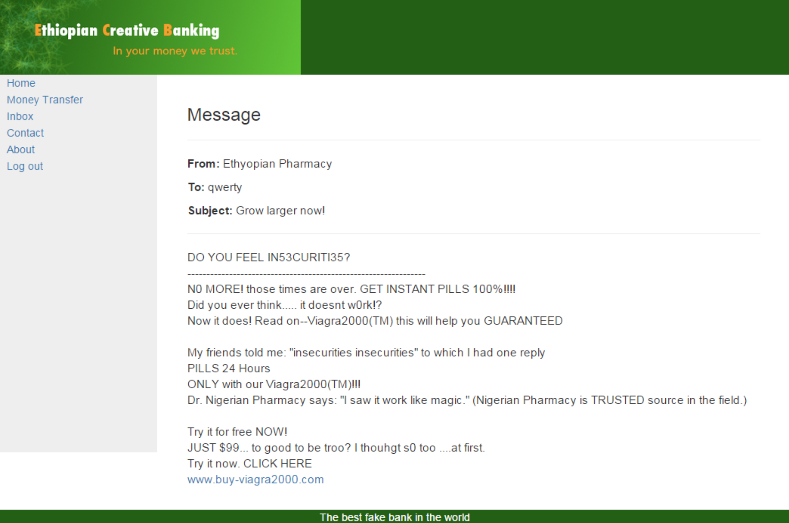
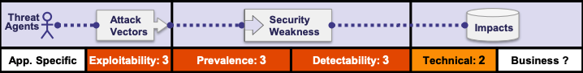

Top Ten project
The 10 Most Critical Web Application Security Risks
Jeroen Meys
Introduction
About me
Jeroen Meys
Java Developer
Security Enthousiast
https://github.com/jmeys
Cyber Security Challenge 2015
6th place ü•≥
Web Hacking Security
Web Hacking Security
|  | |
Juice Shop

OWASP
- Open Web Application Project
- https://owasp.org
- OWASP Top Ten Project (2017)
Top Ten Project (2017)
- Updated every few years
- Based on data and enterprise feedback
Application Security Risks
- Different for every business / application
- Sometimes effort is not worth it
Risk = Likelihood * Impact

Injection

What is injection?
' OR 1=1 --- Attacker can send hostile data to interpreter
SQLi
Is my application vulnerable?
- User-supplied data is not validated, filtered, or sanitized by the application.
- Dynamic queries or non-parameterized calls without escaping used directly in interpreter
- Search parameters used to extract additional, sensitive records.
- Hostile data is directly used or concatenated in SQL command
inurl:index.php?id=
Types of injection attacks
- SQL
- Union-Based
- Blind
- Error-Based
- NoSQL
- OS Command
- ORM
- LDAP
- ...
How to prevent
- use safe API
- migrate to ORM Tools
- server-side input whitelisting
- Use LIMIT and other controls within queries to prevent mass disclosure
- Least Privilege
- Back-ups
Example Attack Scenarios
inurl:index.php?id=
Broken Authentication

What is Broken Authentication?
- Authentication implemented incorrectly
Is my application vulnerable?
- Credential stuffing
- Brute forcing
- Default or weak passwords
- Weak password recovery mechanism
- No or weak encryption
- No or ineffective MFA
- IDs in URL
- No session invalidation
How to prevent
- MFA
- No Default credentials
- Check for weak passwords
- Use password policy
- Login rate limiting
- Use random generators with high entropy
Example Attack Scenarios
- Credential stuffing
- Password rotation
- Application timeouts too long

Sensitive Data Exposure
What is Sensitive Data Exposure?
- Obtain/intercept badly protected sensitive data
- unencrypted data
- unencrypted connections
- Not all data is sensitive
Signs of Sensitive Data Exposure
Signs of Sensitive Data Exposure
- Application processes sensitive data
- Sensitive data transfered in plain text?
- HTTP
- SMTP
- FTP
- Sensitive data storaged in plain text?
- passwords
- PII
- PCI data
- Encryption weak or not enforced?
- User agent ignores bad certificates?
How to prevent
- Classify data which is stored, processed or transmitted
- Don't store sensitive data unnecessarily
- Use TLS with PFS / Server cypher prio and HSTS
- Disable caching for responses with sensitive data
- Store passwords with strong adaptive and salted hashing (delayed) functions
- brypt
- scrypt
- Argon2
- PBKDF2
Example Attack Scenarios
- Encryption of data in database (instead of application)
- No HSTS
- ...
XML External Entities (XXE)
<?xml version="1.0" encoding="ISO-8859-1"?>
<!DOCTYPE foo [
<!ELEMENT foo ANY >
<!ENTITY xxe SYSTEM "file:///etc/passwd" >
]>
What is XXE?
- Evaluate mailicious external entities
When is an application vulnerable to XXE?
- Application accepts XML
- External entities not disabled
How to prevent
- Update libraries
- Disable external entities / DTD processing
- Use XSD for file format validation
- Opt for simpler format like JSON
- SAST can detect
Example Attack Scenarios
/etc/passwd- Billion Laughs Attack
Billion Laughs Attack
<?xml version="1.0"?> <!DOCTYPE lolz [ <!ENTITY lol "lol"> <!ELEMENT lolz (#PCDATA)> <!ENTITY lol1 "&lol;&lol;&lol;&lol;&lol;&lol;&lol;&lol;&lol;&lol;"> <!ENTITY lol2 "&lol1;&lol1;&lol1;&lol1;&lol1;&lol1;&lol1;&lol1;&lol1;&lol1;"> <!ENTITY lol3 "&lol2;&lol2;&lol2;&lol2;&lol2;&lol2;&lol2;&lol2;&lol2;&lol2;"> <!ENTITY lol4 "&lol3;&lol3;&lol3;&lol3;&lol3;&lol3;&lol3;&lol3;&lol3;&lol3;"> <!ENTITY lol5 "&lol4;&lol4;&lol4;&lol4;&lol4;&lol4;&lol4;&lol4;&lol4;&lol4;"> <!ENTITY lol6 "&lol5;&lol5;&lol5;&lol5;&lol5;&lol5;&lol5;&lol5;&lol5;&lol5;"> <!ENTITY lol7 "&lol6;&lol6;&lol6;&lol6;&lol6;&lol6;&lol6;&lol6;&lol6;&lol6;"> <!ENTITY lol8 "&lol7;&lol7;&lol7;&lol7;&lol7;&lol7;&lol7;&lol7;&lol7;&lol7;"> <!ENTITY lol9 "&lol8;&lol8;&lol8;&lol8;&lol8;&lol8;&lol8;&lol8;&lol8;&lol8;"> ]> <lolz>&lol9;</lolz>
Broken Access Control

What is Broken Access Control?
- Perform actions you should not be able to do
- By modifying url, token or data
- To access unauthorized functionality/data
https://website.com/basket/10666
Signs of Broken Access Control
- Elevation of privilege
- CORS misconfiguration
- Force browsing to authenticated pages as unauthenticated user
- privilege checks in front end only
How to prevent
- Deny by default
- Implement access control mechanisms once and re-use them
- Enforce record ownership
Example Attack Scenarios
- Change ID in URL and see what happens
https://patientinfo.com?id=159https://patientinfo.com?id=160
- Check if you an access admin urls as non-admin
https://patientinfo.com/users/dashboard
https://patientinfo.com/admins/dashboardhttps://patientinfo.com/users/dashboard/adminhttps://patientinfo.com/users/dashboard?admin
☕️ Pause ☕️
Security Misconfiguration
What is Security Misconfiguration?
- insecure defaults (admin/admin)
- incomplete configuration
- open cloud storage
- misconfigured HTTP Headers
- Verbose errors revealing sensitive info
- Most commonly seen issue
Signs of Security Misconfiguration
- Lacking HTTP security Headers
- insecure default settings and accounts
- verbose error logs on HTTP 500
- insecure defaults
- outdated software
- Updated system has wrong security settings
How to prevent
- Keep hardened configigurations identically over all environments
- Minimal platform w/o unnecesary:
- features
- components
- documentation
- samples
- A task to review and update all components / permissions
- Use segmented architecture
- Use containerization
- Sending security directives to clients (Security Headers)
- Use automated process to verify effectiveness of configs in all environments
Example Attack Scenarios
- Directory listing not disabled
- Error messages reveal sensitive data
- Cloud service provider has weak default sharing permissions
Cross-Site Scripting (XSS)
What is XSS?
- Untrusted data
- Not sanitized
- Executes code or alters site to
- Hijack sessions
- deface web sites
- redirect user to malicious website
Types of XSS
- Reflected XSS
- DOM XSS
- Stored XSS
How to prevent
- Use framework for escaping XSS by design
- Lookup what your framework does and doesn't
- Use Content Security Policy HTTP headers
Example Attack Scenarios
Insecure Deserialization
What is Insecure Deserialization?

- 2 Types
- data structure tempering
- data tempering
- Tempering with cookies
- Modify configs that server loads
- Modify cache data
How to prevent
- Don't accept serialized objects from untrusted sources
- Only allow serialized primitive data types
- Define strict type constraints
- Run deserialization code with low privilege
- Log deserialization exceptions
Example Attack Scenarios
Cookie:
a:4:{i:0;i:132;i:1;s:7:"Alice";i:2;s:4:"user"; i:3;s:32:"b6a8b3be";}
a:4:{i:0;i:132;i:1;s:7:"Eve";i:2;s:4:"admin"; i:3;s:32:"b6a8b3be";}
Using Components with Known Vulnerabilities
What is it?
- Usage of older libraries with known vulnerabilities
- Badly patched components (OS, web server)
- Not configuring components correctly
How to prevent
- Remove unused dependencies
- Have patch management in place
- Subscribe to vulnerability mailing lists
- Only obtain sources via trusted parties
Example Attack Scenarios
- Diginotar
- Personal VM
Insufficient Logging & Monitoring
What is it?
- Insufficient logging and monitoring
- Login attempts
- Sensitive operations
- Error messages are unclear
- Not processing logs
- Logs are not distributed
- No scanning for malicious activity
How to prevent
- Log all login, access control failures and server-side input validation failures
- Penetration testing should trigger alarms
- Use log format that is easily processed
- audit-trail for high-value transactions
- Event sourcing
- Establish effective monitoring and alerting
- Adopt en incident response and recovery plan
Cross Site Request Forgery (CSRF)
What is CSRF?
- Force someone into performing action on application they are authenticated with
- Force victim into application state change <> Not stealing data
How to prevent
- Use CSRF Token
<input type="hidden" name="_token" id="csrf-token" value="64awd4684awda8aw">- stateful
- stateless
- Require user interaction for highly sensitive operations
- re-authentication
- one-time token
- As a user, log out
Example Attack Scenarios
<img src="http://bank.com/transfer.do?acct=MARIA&amount=100000"><body onload="document.forms[0].submit()"><form...
üèÅ Capture the flag üèÅ
üèÅ Capture the flag üèÅ
|
|
| https://github.com/jmeys/juice-shop | https://ctf.meys.io |
Slides: https://www.meys.io